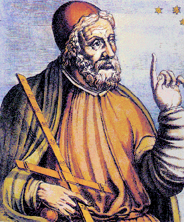

The Ptolemy project studies modeling, simulation, and design of concurrent, real-time, embedded systems. The focus is on assembly of concurrent components. The key underlying principle in the project is the use of well-defined models of computation that govern the interaction between components. A major problem area being addressed is the use of heterogenous mixtures of models of computation. A software system called Ptolemy II is being constructed in Java.
The work is conducted in the Department of Electrical Engineering and Computer Sciences of the University of California at Berkeley. The project is directed by Prof. Edward Lee. The project is named after Claudius Ptolemaeus, the second century Greek astronomer, mathematician, and geographer.
http://ptolemy.eecs.berkeley.edu/oldwww